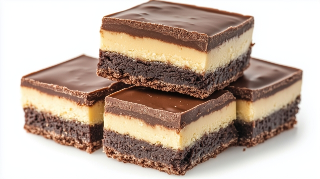

Nanaimo Bars

Three layers of, coconut crumb base, custard filling, complete with a chocolate ganache topping!
The Nanaimo bar is a no-bake dessert named after Nanaimo, a Canadian city in British Columbia.
Ingredients
- 1 cup butter, softened, divided
- 5 tablespoons unsweetened cocoa powder
- 1/4 cup white sugar
- 1 large egg, beaten
- 1 3/4 cups graham cracker crumbs
- 1 cup flaked coconut
- 1/2 cup finely chopped almonds (Optional)
- 3 tablespoons heavy cream
- 2 tablespoons custard powder
- 2 cups confectioners' sugar
- 4 (1 ounce) squares semisweet baking chocolate
- 2 teaspoons butter
Steps
- Gather all ingredients.
- In the top of a double boiler, combine 1/2 cup softened butter, cocoa powder, and sugar. Stir occasionally until melted and smooth. Beat in egg and stir until thick, 2 to 3 minutes.
- Remove from the heat and mix in graham cracker crumbs, coconut, and almonds. Press into the bottom of an ungreased 8x8-inch pan.
- For the middle layer, beat remaining 1/2 cup softened butter, heavy cream, and custard powder until light and fluffy. Mix in confectioners' sugar until smooth. Spread over the bottom layer in the pan. Chill to set.
- While the second layer is chilling, melt semisweet chocolate and 2 teaspoons butter together in the microwave or over low heat.
- Spread melted chocolate mixture over chilled bars.
- Let the chocolate set before cutting into squares.
Home